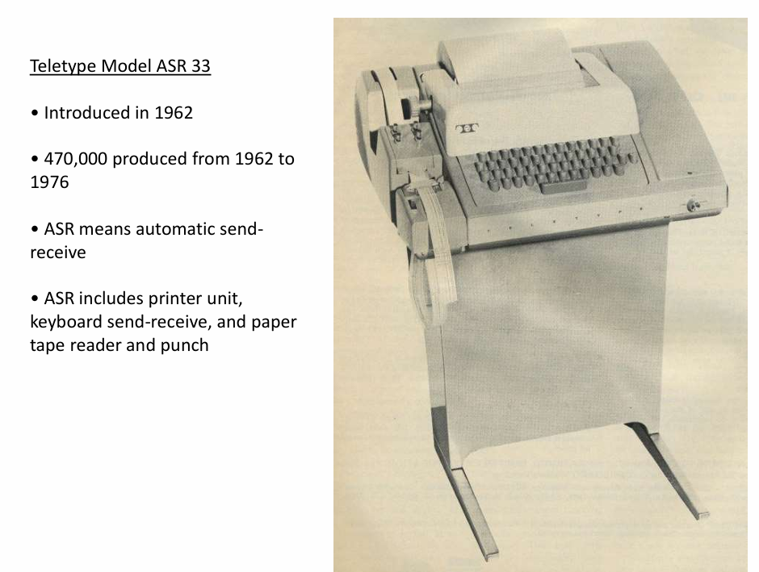
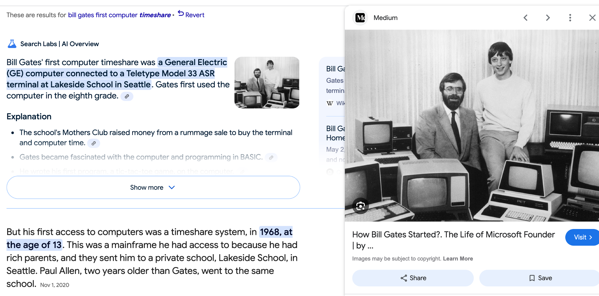

Part 2: Pay Attention
Some advantages are easy to miss because they feel normal while you have them.
The Story
Before you read this story, answer one question:
Do you have a hidden advantage?
Most people do not know how to answer that.
They think an advantage has to look obvious. A lot of money. A famous parent. A perfect school. A special talent. Something that makes life easy.
But some advantages do not feel special while you have them.
They just feel normal.
You are in school. You can read. You have teachers. You have access to the internet. You can use tools that let you write, build, search, code, record, edit, publish, and learn almost anything.
You probably did not wake up this morning wondering where clean water would come from. You probably did not spend the day trying to find electricity. You probably do not think of a computer as a rare machine that only a few kids in the world get to touch.
That does not mean your life is easy.
It does not mean everything is fair.
It means you may already have access to things that are more valuable than they feel right now.
That is what a hidden advantage is.
It is something that helps you before you understand how much it helps you.
Bill Gates had one.
In the late 1960s, Gates was a student at Lakeside School in Seattle. A few teachers there helped get students access to a computer terminal. That sounds ordinary now, but it was not ordinary then. Most kids had never touched a computer. Most adults had never touched one either.
The machine was a Teletype ASR-33. It did not have a screen. It did not have apps. It did not glow with possibility. It looked more like a typewriter attached to a stand.

The actual computer was somewhere else. The terminal at Lakeside connected over a phone line to a larger computer. You typed your program, fed in paper tape, and waited for the machine to answer.
The answer came back slowly, printed onto paper.
The terminal alone cost more than $1,000 a year to lease, which is about $9,600 in 2026 money. And that was before the school paid thousands more for actual computer time.
So the room had pressure in it.
If your program had a mistake, you were not just wrong. You were wasting time that cost money. Gates later remembered students crowding around while someone used the machine, calling out when they saw a typing mistake or when someone was taking too long.

That detail makes the story feel different.
It was not Microsoft yet.
It was not a billionaire origin story yet.
It was a noisy machine, a phone line, paper tape, expensive minutes, and a few kids trying to make something happen before the time ran out.
That was Gates’s hidden advantage.
Not that success was guaranteed.
Not that the machine made his life easy.
The advantage was access.
He was near something rare before it was obvious how important it would become. Then he paid attention. He stayed with it. He learned what the machine accepted and what it rejected. He learned that the computer did not care what he meant. It only cared exactly what he typed.
That can feel annoying when you are learning.
It is also the beginning of thinking like a programmer.
Years later, Gates said that without Lakeside, there would have been no Microsoft.
A hidden advantage only matters if you notice it. Gates could have ignored the terminal. He could have decided it was too confusing. He could have treated it like some weird school machine and moved on.
But he did not.
He moved closer.
You may not know yet which thing around you will matter later. It might be a class. A tool. A project. A teacher. A question. A skill that feels useless right now. A strange assignment. A black box you do not know how to open yet.
You may not know your hidden advantages until years later.
But you definitely miss them if you are not paying attention.
Open the next door
The next door opens only if you noticed two details: where the story happened, and the phrase that explains the idea.
1. What school put the strange machine close enough for Gates to use?
2. What does the story call an advantage that feels normal before you understand it?